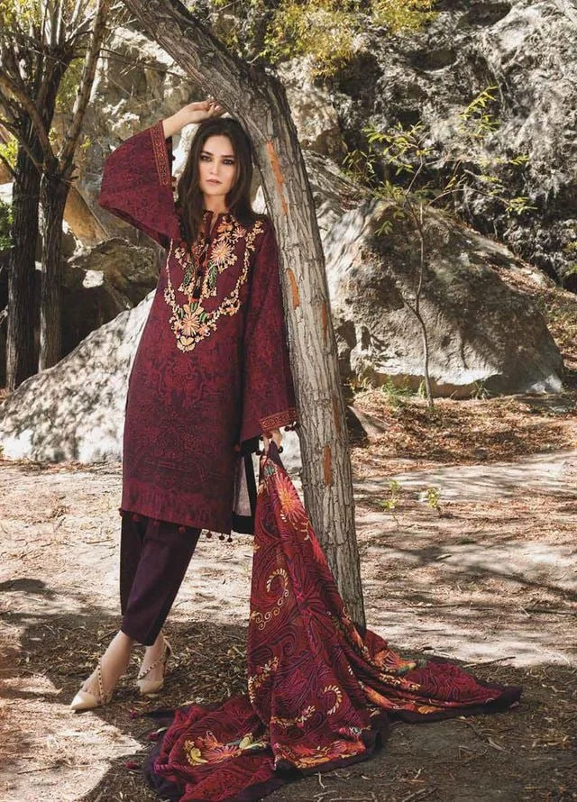
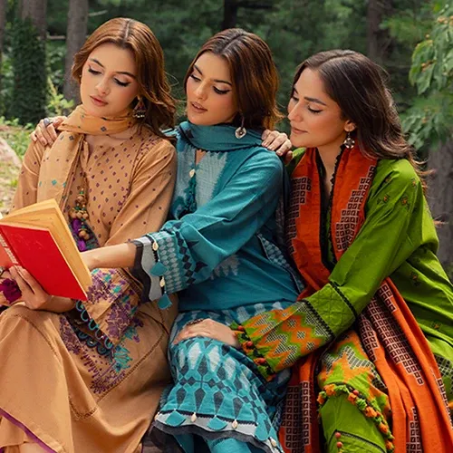

The Timeless Elegance of Khaddar in Winter Fashion
Introduction
As winter blankets the landscape, it’s the perfect time to embrace the warmth and richness of khaddar fabric. Known for its durability and warmth, khaddar is a staple in Pakistani winter wardrobes. At TrendAura, we celebrate this timeless fabric with our exquisite Winter Khaddar Collection, featuring stunning designs for both men and women.
What Makes Khaddar the Ideal Winter Fabric?
Khaddar is a handwoven fabric that stands out due to its thick, coarse texture, providing exceptional insulation against the cold. Here’s why khaddar should be your go-to this winter:
- Warmth and Comfort: The dense weave traps heat, ensuring you stay cozy.
- Rich Colors and Patterns: Available in a variety of hues, from deep maroons to earthy tones, khaddar can be adorned with traditional motifs or modern designs, catering to diverse tastes.
- Sustainability: Khaddar is often made from natural fibers, making it a sustainable choice for eco-conscious shoppers.

Styling Khaddar for Women
- Casual Chic: Pair a solid khaddar kameez with comfortable denim or churidar. Add a woolen shawl with subtle embellishments for warmth.
- Evening Glam: Opt for an embroidered khaddar suit in dark tones. Complete the look with traditional jewelry and a clutch.

Styling Khaddar for Men
- Work-Ready: A classic khaddar shalwar kameez with a waistcoat can be perfect for office wear. Choose neutral colors for a sophisticated look.
- Festive Flair: For celebrations, opt for a boldly colored khaddar suit with intricate embroidery. Pair it with a matching shawl.
Conclusion
“Fashion is the armor to survive the reality of everyday life.” Investing in khaddar this winter ensures you embrace both tradition and style. Explore TrendAura’s Winter Khaddar Collection today and elevate your winter wardrobe with the elegance of this fabric.
Whether you prefer khaddar for its warmth or lawn for its layering versatility, both are essentials for any Pakistani winter wardrobe. Shop TrendAura’s winter-ready collection today.